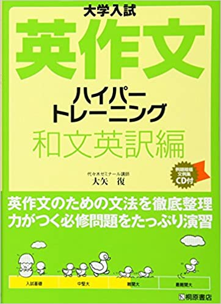
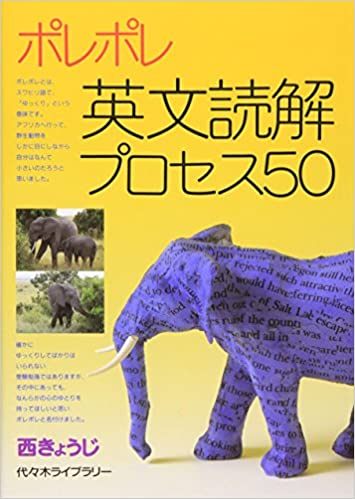
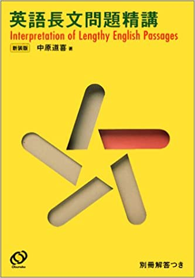
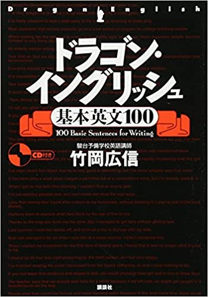
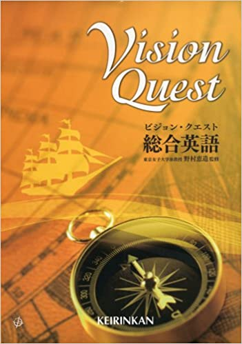
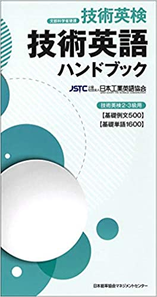

私は高専から東京大学工学部と大阪大学基礎工学部を受験し両方とも合格をいただきました.
数学,英語,物理を受験科目として勉強してきたのでそこで用いた参考書を紹介します.
このページでは特に英語で用いた参考書を紹介します.数学と物理については以下のリンクからご覧ください.
目次
おすすめ度★★★★★
改訂版 鉄緑会東大英単語熟語 鉄壁
単語帳です.編入英語の単語帳として人気なのはDuo3.0ですが,私はこちらを使っていました.
Duo3.0より網羅率は高いので難関大を受験する方ほどおすすめです.
語源やイラストを使って単語を覚えやすいような工夫が散りばめられています.
例文もある程度難解で,熟語も豊富で,重要な単語には解説がついているので前から読んでいくだけでも力がつきます.大学入試英作文ハイパートレーニング和文英訳編

和文英訳の参考書です.和文英訳のための基礎知識を網羅的に知れます.
解説が丁寧で様々な分野の練習問題も掲載されているので,編入試験に和文英訳の問題が出る人にはかなりおすすめです.
おすすめ度★★★★
ポレポレ英文読解プロセス50

長文読解,構文理解のための参考書です.
関係代名詞や接続詞がごちゃごちゃになった難解な文を正しく読み解く練習ができます.
文章がかなり難解なので大学によっては必要ないかもしれませんが,難関大を受ける方にはおすすめです.英語長文問題精講 新装版

長文問題のための参考書です.
難しめの長文問題の練習ができます.ひたすら長文問題が並んでいるという感じです.
こちらも難解な長文が多いので難関大を受ける方にはおすすめです.ドラゴン・イングリッシュ基本英文１００

和文英訳(と文法)の参考書です.
例文が100個並んでいて,それぞれの文に重要な文法事項(とその解説)が散りばめられています.
重要例文を100個覚えることで和文英訳に対応できる表現を覚えていこうという参考書です.
ハイパートレーニング和文英訳とコンボにして勉強すると和文英訳の力がすごくつくと思います.
おすすめ度★★★
ビジョン・クエスト総合英語 (総合英語参考書)

文法書です.
英語の勉強に余裕があれば一通り目を通すと意外と忘れてた文法事項を思い出せたり,知らなかったことを知れたりします.
文法事項を調べるのにも役に立ちます.大学入試英作文ハイパートレーニング 自由英作文編
自由英作文の参考書です.
色んな種類の自由英作文について,それぞれの基本的な書き方の型を学べます.
自由英作文が出題される大学を受験する方はこれを1冊やっておけばある程度対応できると思います.
おすすめ度★★
- 技術英語ハンドブック

工学の分野に関する単語帳です.
工学系の英訳問題や長文問題がよく出題される方はやってもいいと思いますが,個人的には鉄壁で十分だと思います.